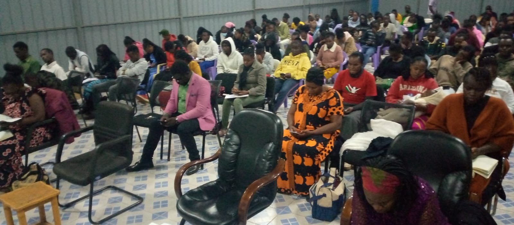
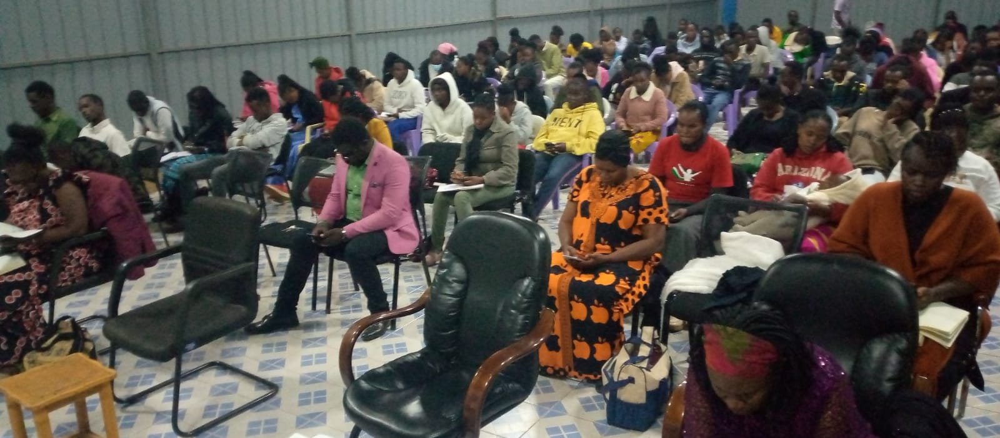

Welcome to Wells of Revival
" Raising eagles in the Kingdom, Men and Women of character and integrity "
Experience Our Worship
Our Leadership

Bishop John Ayisi
Lead Pastor
Join Us in Worship
Sunday Service
First service 8:00 AM - 9:30 AM
Second service 10:00 AM - 11:30 AM
Discipleship/mentorship Classes - 11:45 AM - 12:30 PM
Fellowship Meetings
Diaspora fellowship on Wednesday
9:00 PM - 9:30 PM
Our Church Gallery